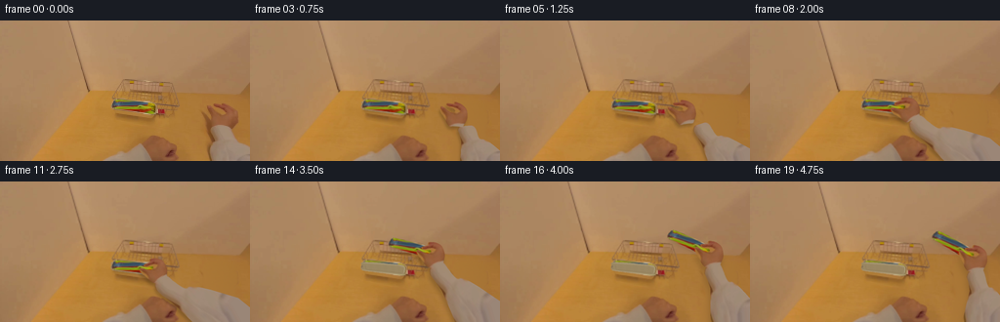
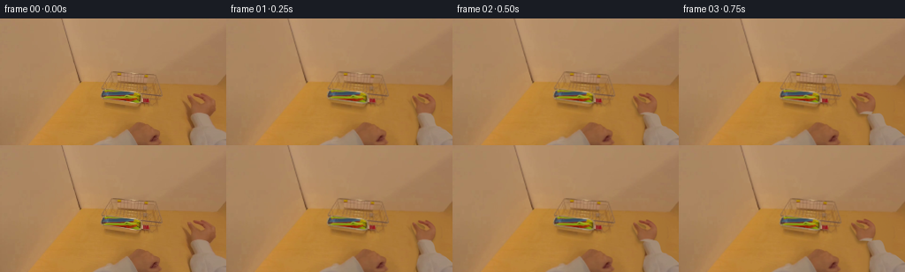
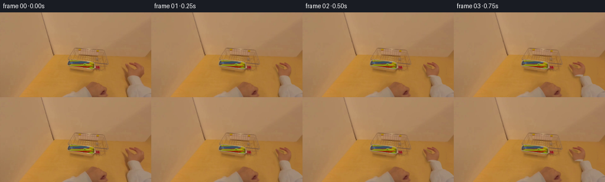
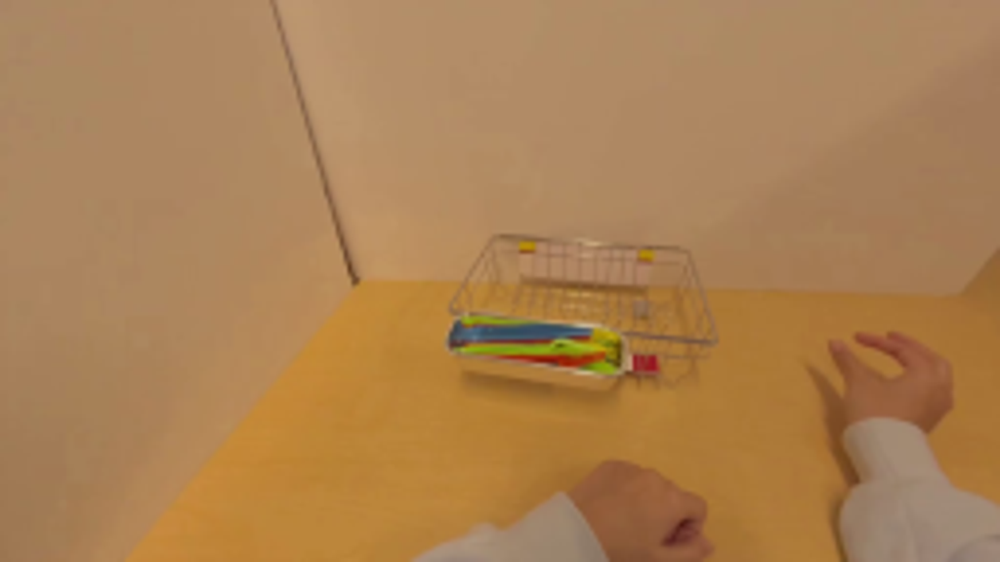
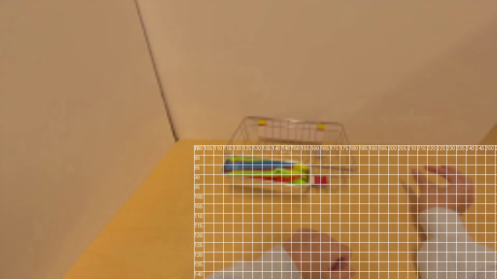
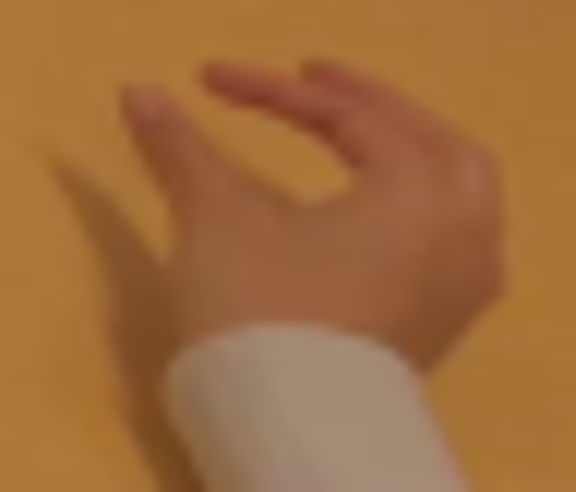
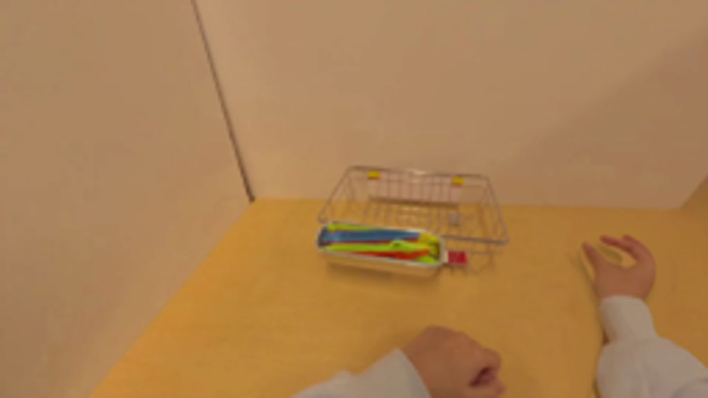
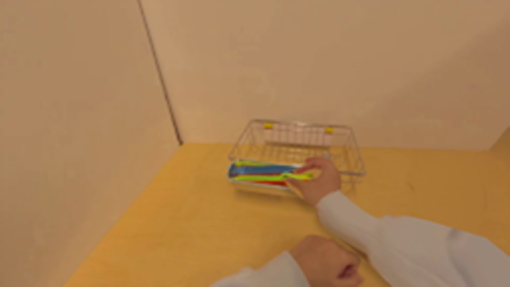
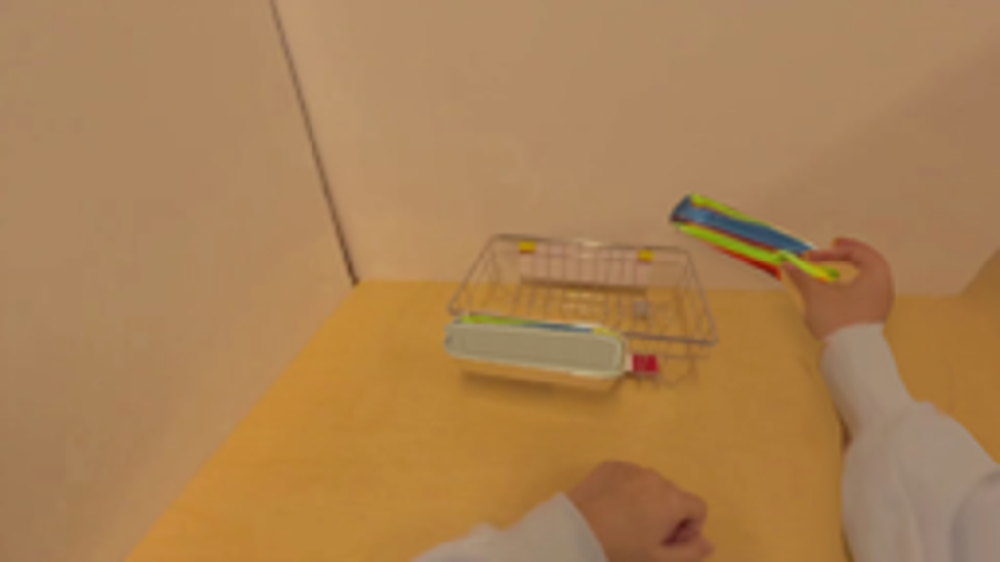
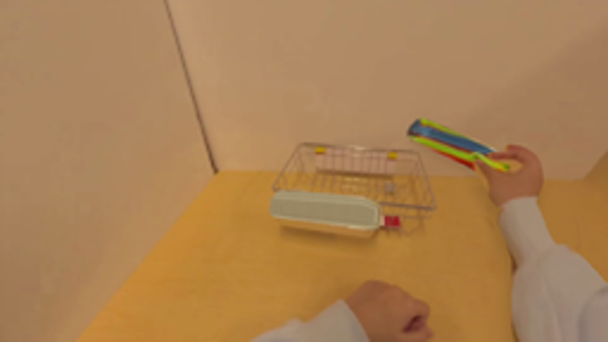

CODING AGENTS AS PIXEL WORLD MODELS
traex/GPT-6.1-Sol · common50_0016
点击播放 · 原生 RGB 像素
逐轮保存的候选
回放视频、检查图与代码变化。
每份候选均可单独播放。实际图片检查记录在下方工具轨迹中。
候选 01播放与检查图
点击播放 · 原生 RGB 像素


展开代码变化
--- 上一保存版本
+++ 本次保存版本
@@ -0,0 +1,189 @@
+from pathlib import Path
+import math
+import numpy as np
+from PIL import Image, ImageDraw, ImageFilter
+import cv2
+from scipy.ndimage import gaussian_filter
+from artifact_io import save
+
+ROOT=Path(__file__).resolve().parent
+S=4; W=256; H=144
+original=np.array(Image.open(ROOT/'first_frame.png').convert('RGB'))
+
+def smooth(a):
+ a=np.clip(a,0,1); return a*a*(3-2*a)
+
+def curve(points, steps=12):
+ p=np.array(points,float); out=[]
+ for i in range(len(p)):
+ a,b,c,d=p[(i-1)%len(p)],p[i],p[(i+1)%len(p)],p[(i+2)%len(p)]
+ for t in np.linspace(0,1,steps,endpoint=False):
+ out.append(.5*((2*b)+(-a+c)*t+(2*a-5*b+4*c-d)*t*t+(-a+3*b-3*c+d)*t**3))
+ return out
+
+def mask(points,sz=(W*S,H*S),blur=.25):
+ m=Image.new('L',sz); ImageDraw.Draw(m).polygon([(x*S,y*S) for x,y in curve(points)],fill=255)
+ if blur:m=m.filter(ImageFilter.GaussianBlur(blur*S))
+ return np.array(m)/255.
+
+handpts=[(218,108.5),(215.8,104.2),(215.4,101.6),(213.7,97.3),(212.1,94.3),(211.5,91.3),(211.9,88.6),(213.1,87.4),(214.4,87.9),(216.5,89.9),(218.8,92.4),(221.4,94.5),(224,95.6),(226.6,94.5),(225.8,92.1),(223.5,90.6),(220.2,88.9),(218.3,87.2),(218.4,85.7),(219.7,85),(222,85.6),(225.4,86.9),(228.3,88.5),(225.8,86.3),(226.5,85.3),(228.1,85),(230.8,86.5),(233.8,88.5),(236.6,91.6),(238,94.4),(238.4,98),(237.4,103.5),(235.3,106.9),(232.9,109.8),(230.9,111.3),(226,110),(222,109.2)]
+sleevepts=[(215.6,111.4),(218,108.5),(222.6,107.6),(227,107.5),(231,108.5),(233.6,110.5),(235.3,113.9),(236.7,119.5),(238.6,122.1),(242.6,123.2),(248.7,126.9),(253.2,129),(259,131.5),(282,184),(202,184),(212.7,146),(214.5,135),(216.5,127.2),(216.8,120),(215.8,115.2)]
+handmask=mask(handpts)
+# A photographic clean plate of the tabletop under the moving right arm.
+removepts=[(210,83),(220,81),(233,82),(242,89),(245,102),(241,115),(249,122),(260,127),(275,162),(207,161),(208,130),(210,115),(207,98)]
+rm=mask(removepts,blur=1.2)
+y,x=np.mgrid[0:H,0:W]
+samples=(x>=188)&(x<207)&(y>=80)
+A=np.column_stack([np.ones(samples.sum()),x[samples]-197,y[samples]-110])
+coef=np.linalg.lstsq(A,original[samples].astype(float),rcond=None)[0]
+coef[1]=[-.12,-.10,-.05]
+plate=coef[0]+(x[...,None]-197)*coef[1]+(y[...,None]-110)*coef[2]
+rng=np.random.default_rng(12)
+plate+=gaussian_filter(rng.normal(0,.55,(H,W,3)),(.6,.6,0))
+base=np.array(Image.fromarray(original).resize((W*S,H*S),Image.Resampling.BICUBIC)).astype(float)
+platehi=cv2.resize(plate.astype(np.float32),(W*S,H*S),interpolation=cv2.INTER_CUBIC)
+base=base*(1-rm[...,None])+platehi*rm[...,None]
+# Extract the stack, preserving original lighting and all the individual colors.
+utensilpts=[(114.8,86.0),(116.1,83.1),(117.9,81),(123,81.2),(133.8,81.7),(145,82.7),(151.5,84),(155.9,85.1),(158,86.8),(158.8,89),(158.7,92.7),(157,95.2),(152.8,94.6),(146.7,94.1),(136,93),(127,92.1),(117.4,91),(114.6,89.5)]
+um=mask(utensilpts,blur=.18)
+orig_hi=np.array(Image.fromarray(original).resize((W*S,H*S),Image.Resampling.BICUBIC)).astype(np.float32)
+# Reconstruct just the inset of the silver tray. Outer photographed edges remain untouched.
+innerpts=[(117,82.7),(151.9,85),(158.8,87.1),(158.7,93.8),(156.3,96),(144,94.8),(126.5,92.6),(115.2,90.7),(115.4,87)]
+imask=mask(innerpts,blur=.40)
+Y,X=np.mgrid[0:H*S,0:W*S]/S
+# A brushed metal basin, reflecting the warm tabletop, with a darker recessed floor.
+topline=82.5+.075*(X-116); bottomline=91.7+.105*(X-116)
+v=np.clip((Y-topline)/(bottomline-topline),0,1)
+metal=np.zeros_like(base)
+for k,(top,mid,bot) in enumerate([(165,154,190),(148,135,174),(112,99,132)]):
+ metal[...,k]=mid+(top-mid)*np.exp(-v*12)+(bot-mid)*np.exp(-(1-v)*17)
+metal+=np.sin(X*.85)[...,None]*.75+np.sin((Y-.03*X)*5)[...,None]*.4
+# Metallic rim and shallow inset strokes drawn at supersampled resolution.
+metalim=Image.fromarray(np.uint8(np.clip(metal,0,255)))
+d=ImageDraw.Draw(metalim)
+def line(pts,color,width):d.line([(int(px*S),int(py*S)) for px,py in pts],fill=color,width=max(1,int(width*S)),joint='curve')
+line([(116.2,83.2),(152.4,85.6),(158.4,87.7),(158,93.5)],(187,175,139),.65)
+line([(118.3,86.2),(119,90),(145,92.5),(155.5,94)],(137,119,82),.45)
+line([(115.6,90.5),(126.5,92.5),(148,95),(156.6,96)],(197,179,139),.65)
+metal=np.array(metalim).astype(float)
+emptybase=base*(1-imask[...,None])+metal*imask[...,None]
+# Extend the sleeve photograph below the frame for mesh warping.
+tex=np.pad(orig_hi,((0,44*S),(0,34*S),(0,0)),mode='edge')
+sm=mask(sleevepts,sz=(290*S,188*S),blur=.24)
+# The padded image width/height exactly match the sleeve layer.
+tex=tex[:188*S,:290*S]
+sleeve_rgba=np.dstack((tex,sm*255)).astype(np.float32)
+hand_rgba=np.dstack((orig_hi,handmask*255)).astype(np.float32)
+ut_rgba=np.dstack((orig_hi,um*255)).astype(np.float32)
+
+def over(rgb,layer):
+ a=np.clip(layer[...,3:4]/255,0,1)
+ return rgb*(1-a)+layer[...,:3]*a
+
+def affine_layer(layer,ang,scale,anchor,target):
+ a=math.radians(ang); c=math.cos(a)*scale;s=math.sin(a)*scale
+ M=np.array([[c,-s,target[0]-c*anchor[0]+s*anchor[1]],[s,c,target[1]-s*anchor[0]-c*anchor[1]]],dtype=np.float32)
+ M[:,2]*=S
+ # premultiplication prevents dark fringes at the photographic cutout.
+ p=layer.copy();p[...,:3]*=p[...,3:4]/255
+ res=cv2.warpAffine(p,M,(W*S,H*S),flags=cv2.INTER_CUBIC,borderMode=cv2.BORDER_CONSTANT)
+ aa=res[...,3:4]/255
+ res[...,:3]=np.divide(res[...,:3],aa,out=np.zeros_like(res[...,:3]),where=aa>.002)
+ return res
+
+rows=np.array([108,114,121,132,144,160,184.],float)
+centers=np.array([225,228,230,235,239,247,259.],float)
+widths=np.array([11,11,12,19,26,33,41.],float)
+source=[]
+for yy,cc,ww in zip(rows,centers,widths):
+ source.extend([(cc-ww,yy),(cc,yy),(cc+ww,yy)])
+source=np.array(source)*S
+tris=[]
+for i in range(len(rows)-1):
+ for j in range(2):
+ a=i*3+j;b=a+1;c=a+3;dd=c+1
+ tris.extend([(a,b,c),(b,dd,c)])
+
+def sleeve_layer(wrist,angle,progress):
+ th=math.radians(angle)
+ p0=np.array(wrist);p3=np.array([249.,161.])
+ p1=p0+np.array([-math.sin(th)*28+6,math.cos(th)*28]);p2=p3-np.array([10,24])
+ dest=[]
+ for yy,cc,ww in zip(rows,centers,widths):
+ f=(yy-108)/52
+ if f<=1:
+ t=f;pt=(1-t)**3*p0+3*(1-t)**2*t*p1+3*(1-t)*t*t*p2+t**3*p3
+ tangent=3*(1-t)**2*(p1-p0)+6*(1-t)*t*(p2-p1)+3*t*t*(p3-p2)
+ else:pt=p3+(f-1)*3*(p3-p2);tangent=p3-p2
+ n=np.array([tangent[1],-tangent[0]]);n/=np.linalg.norm(n)
+ for off in [-ww,0,ww]:
+ dst=pt+off*n;src=np.array([cc+off,yy]);dest.append(src*(1-progress)+dst*progress)
+ dest=np.array(dest)*S
+ out=np.zeros((H*S,W*S,4),np.float32)
+ for inds in tris:
+ s=source[list(inds)].astype(np.float32);dst=dest[list(inds)].astype(np.float32)
+ xx,yy,ww,hh=cv2.boundingRect(dst)
+ if ww<1 or hh<1:continue
+ x0=max(xx,0);y0=max(yy,0);x1=min(xx+ww,W*S);y1=min(yy+hh,H*S)
+ if x1<=x0 or y1<=y0:continue
+ local=dst-np.array([x0,y0],np.float32)
+ M=cv2.getAffineTransform(s,local)
+ crop=cv2.warpAffine(sleeve_rgba,M,(x1-x0,y1-y0),flags=cv2.INTER_LINEAR,borderMode=cv2.BORDER_CONSTANT)
+ m=np.zeros((y1-y0,x1-x0),np.uint8);cv2.fillConvexPoly(m,np.round(local).astype(np.int32),255)
+ take=m>0;out[y0:y1,x0:x1][take]=crop[take]
+ return out
+
+# A local deformation closes the thumb/index gap at contact without repainting skin.
+def close_hand(amount):
+ yy,xx=np.mgrid[0:H*S,0:W*S].astype(np.float32);xx/=S;yy/=S
+ # Index moves down and slightly right, the thumb rises to oppose it.
+ w1=np.exp(-(((xx-220.7)/6.5)**2+((yy-88)/4.3)**2)/2)
+ w2=np.exp(-(((xx-214.2)/4)**2+((yy-91)/5)**2)/2)
+ mx=(xx-amount*(1.1*w1+1.4*w2))*S
+ my=(yy-amount*(2.3*w1-1.05*w2))*S
+ return cv2.remap(hand_rgba,mx.astype(np.float32),my.astype(np.float32),cv2.INTER_CUBIC,borderMode=cv2.BORDER_CONSTANT)
+
+frames=[]
+for i in range(20):
+ if i==0:
+ frames.append(original.copy());continue
+ reach=smooth((i-.2)/8.8)
+ grip=smooth((i-8)/3)
+ lift=smooth((i-11)/7)
+ # Reach, establish contact, then carry the stack clear of the tray toward the viewer's right.
+ contact=np.array([153.,90.]);start=np.array([222.,94.]);finish=np.array([224.,75.])
+ target=start*(1-reach)+contact*reach
+ if i>=11:target=contact*(1-lift)+finish*lift+np.array([0,-12*math.sin(math.pi*lift)])
+ angle=-35*reach+24*lift; size=1+.10*lift
+ th=math.radians(angle);R=np.array([[math.cos(th),-math.sin(th)],[math.sin(th),math.cos(th)]])*size
+ wrist=target+R@(np.array([225.,108.])-start)
+ arm=sleeve_layer(wrist,angle,reach)
+ hand=affine_layer(close_hand(grip),angle,size,start,target)
+ if i<11:
+ utensils=ut_rgba
+ bg=emptybase.copy()
+ else:
+ # The utensil heads rotate naturally as the wrist lifts; all move together in the pinch.
+ utens_ang=24*lift
+ utensils=affine_layer(ut_rgba,utens_ang,size,contact,target)
+ bg=emptybase.copy()
+ # Soft moving contact shadows on the wood, decreasing after the lift.
+ ua=utensils[...,3]/255
+ ush=cv2.GaussianBlur(ua,(0,0),1.5*S)
+ ush=cv2.warpAffine(ush,np.array([[1,0,1*S],[0,1,2.7*S]],np.float32),(W*S,H*S))
+ bg*=1-ush[...,None]*(.13-.07*lift)
+ aa=np.maximum(hand[...,3],arm[...,3])/255
+ sh=cv2.GaussianBlur(aa,(0,0),(1.3+2*lift)*S)
+ sh=cv2.warpAffine(sh,np.array([[1,0,-1*S],[0,1,(3+4*lift)*S]],np.float32),(W*S,H*S))
+ # Shadows cannot fall on the vertical background wall.
+ table=np.clip((Y-74)/5,0,1)
+ bg*=1-sh[...,None]*table[...,None]*(.19-.07*lift)
+ bg=over(bg,arm)
+ bg=over(bg,utensils)
+ bg=over(bg,hand)
+ # Sub-pixel egocentric sway, kept restrained so stationary scene geometry is preserved.
+ sx=.22*math.sin(i*.36);sy=.16*math.sin(i*.43)
+ bg=cv2.warpAffine(bg.astype(np.float32),np.array([[1,0,sx*S],[0,1,sy*S]],np.float32),(W*S,H*S),flags=cv2.INTER_CUBIC,borderMode=cv2.BORDER_REFLECT_101)
+ out=Image.fromarray(np.uint8(np.clip(bg,0,255))).resize((W,H),Image.Resampling.LANCZOS)
+ frames.append(np.array(out))
+save(np.stack(frames),ROOT)
候选 02播放与检查图
点击播放 · 原生 RGB 像素

展开代码变化
--- 上一保存版本
+++ 本次保存版本
@@ -50,6 +50,9 @@
# Reconstruct just the inset of the silver tray. Outer photographed edges remain untouched.
innerpts=[(117,82.7),(151.9,85),(158.8,87.1),(158.7,93.8),(156.3,96),(144,94.8),(126.5,92.6),(115.2,90.7),(115.4,87)]
imask=mask(innerpts,blur=.40)
+# Also clear the upper handles, which overhang the far lip of the basin.
+cleared=cv2.dilate((um*255).astype(np.uint8),np.ones((5,5),np.uint8))/255.
+imask=np.maximum(imask,gaussian_filter(cleared,.65))
Y,X=np.mgrid[0:H*S,0:W*S]/S
# A brushed metal basin, reflecting the warm tabletop, with a darker recessed floor.
topline=82.5+.075*(X-116); bottomline=91.7+.105*(X-116)
@@ -58,6 +61,7 @@
for k,(top,mid,bot) in enumerate([(165,154,190),(148,135,174),(112,99,132)]):
metal[...,k]=mid+(top-mid)*np.exp(-v*12)+(bot-mid)*np.exp(-(1-v)*17)
metal+=np.sin(X*.85)[...,None]*.75+np.sin((Y-.03*X)*5)[...,None]*.4
+metal+=gaussian_filter(rng.normal(0,.75,metal.shape),(.9,.9,0))
# Metallic rim and shallow inset strokes drawn at supersampled resolution.
metalim=Image.fromarray(np.uint8(np.clip(metal,0,255)))
d=ImageDraw.Draw(metalim)
可观测工具轨迹
实际执行的命令与返回图片。
命令 1exit 0
/bin/bash -lc "ls -la && cat prompt.txt && printf '\\n---RULES---\\n' && cat GENERATION_RULES.md"
命令 2exit 0
/bin/bash -lc "cat task_spec.json && cat artifact_io.py && python - <<'PY'
from PIL import Image
im=Image.open('first_frame.png');print(im.size)
im.resize((1024,576)).save('.tmp/enlarged.png')
PY"命令 3exit 0
/bin/bash -lc "python - <<'PY' import importlib.util for x in ['cv2','scipy','numpy','PIL']:print(x, bool(importlib.util.find_spec(x))) PY"
命令 4exit 0
/bin/bash -lc "python - <<'PY'
from PIL import Image,ImageDraw
im=Image.open('first_frame.png').resize((1024,576)); d=ImageDraw.Draw(im)
for x in range(100,256,5):
d.line((x*4,300,x*4,575),fill=(255,255,255),width=1);d.text((x*4,300),str(x),fill='white')
for y in range(75,144,5):
d.line((400,y*4,1023,y*4),fill=(255,255,255),width=1);d.text((400,y*4),str(y),fill='white')
im.save('.tmp/grid.png')
PY"命令 5exit 0
/bin/bash -lc "python - <<'PY'
from PIL import Image
im=Image.open('first_frame.png');im.crop((202,80,250,121)).resize((576,492)).save('.tmp/hand.png');im.crop((110,58,187,101)).resize((924,516)).save('.tmp/tray.png')
PY"命令 6exit 0
/bin/bash -lc "python - <<'PY'
import numpy as np
from PIL import Image
im=np.asarray(Image.open('first_frame.png'))
for y in [85,95,105,115,125,135]:
print(y, [(x,im[y,x].tolist()) for x in [185,195,205,215,225,235,245]])
PY"命令 7exit 0
/bin/bash -lc "cat > generate.py <<'PY'
from pathlib import Path
import math
import numpy as np
from PIL import Image, ImageDraw, ImageFilter
import cv2
from scipy.ndimage import gaussian_filter
from artifact_io import save
ROOT=Path(__file__).resolve().parent
S=4; W=256; H=144
original=np.array(Image.open(ROOT/'first_frame.png').convert('RGB'))
def smooth(a):
a=np.clip(a,0,1); return a*a*(3-2*a)
def curve(points, steps=12):
p=np.array(points,float); out=[]
for i in range(len(p)):
a,b,c,d=p[(i-1)%len(p)],p[i],p[(i+1)%len(p)],p[(i+2)%len(p)]
for t in np.linspace(0,1,steps,endpoint=False):
out.append(.5*((2*b)+(-a+c)*t+(2*a-5*b+4*c-d)*t*t+(-a+3*b-3*c+d)*t**3))
return out
def mask(points,sz=(W*S,H*S),blur=.25):
m=Image.new('L',sz); ImageDraw.Draw(m).polygon([(x*S,y*S) for x,y in curve(points)],fill=255)
if blur:m=m.filter(ImageFilter.GaussianBlur(blur*S))
return np.array(m)/255.
handpts=[(218,108.5),(215.8,104.2),(215.4,101.6),(213.7,97.3),(212.1,94.3),(211.5,91.3),(211.9,88.6),(213.1,87.4),(214.4,87.9),(216.5,89.9),(218.8,92.4),(221.4,94.5),(224,95.6),(226.6,94.5),(225.8,92.1),(223.5,90.6),(220.2,88.9),(218.3,87.2),(218.4,85.7),(219.7,85),(222,85.6),(225.4,86.9),(228.3,88.5),(225.8,86.3),(226.5,85.3),(228.1,85),(230.8,86.5),(233.8,88.5),(236.6,91.6),(238,94.4),(238.4,98),(237.4,103.5),(235.3,106.9),(232.9,109.8),(230.9,111.3),(226,110),(222,109.2)]
sleevepts=[(215.6,111.4),(218,108.5),(222.6,107.6),(227,107.5),(231,108.5),(233.6,110.5),(235.3,113.9),(236.7,119.5),(238.6,122.1),(242.6,123.2),(248.7,126.9),(253.2,129),(259,131.5),(282,184),(202,184),(212.7,146),(214.5,135),(216.5,127.2),(216.8,120),(215.8,115.2)]
handmask=mask(handpts)
# A photographic clean plate of the tabletop under the moving right arm.
removepts=[(210,83),(220,81),(233,82),(242,89),(245,102),(241,115),(249,122),(260,127),(275,162),(207,161),(208,130),(210,115),(207,98)]
rm=mask(removepts,blur=1.2)
y,x=np.mgrid[0:H,0:W]
samples=(x>=188)&(x<207)&(y>=80)
A=np.column_stack([np.ones(samples.sum()),x[samples]-197,y[samples]-110])
coef=np.linalg.lstsq(A,original[samples].astype(float),rcond=None)[0]
coef[1]=[-.12,-.10,-.05]
plate=coef[0]+(x[...,None]-197)*coef[1]+(y[...,None]-110)*coef[2]
rng=np.random.default_rng(12)
plate+=gaussian_filter(rng.normal(0,.55,(H,W,3)),(.6,.6,0))
base=np.array(Image.fromarray(original).resize((W*S,H*S),Image.Resampling.BICUBIC)).astype(float)
platehi=cv2.resize(plate.astype(np.float32),(W*S,H*S),interpolation=cv2.INTER_CUBIC)
base=base*(1-rm[...,None])+platehi*rm[...,None]
# Extract the stack, preserving original lighting and all the individual colors.
utensilpts=[(114.8,86.0),(116.1,83.1),(117.9,81),(123,81.2),(133.8,81.7),(145,82.7),(151.5,84),(155.9,85.1),(158,86.8),(158.8,89),(158.7,92.7),(157,95.2),(152.8,94.6),(146.7,94.1),(136,93),(127,92.1),(117.4,91),(114.6,89.5)]
um=mask(utensilpts,blur=.18)
orig_hi=np.array(Image.fromarray(original).resize((W*S,H*S),Image.Resampling.BICUBIC)).astype(np.float32)
# Reconstruct just the inset of the silver tray. Outer photographed edges remain untouched.
innerpts=[(117,82.7),(151.9,85),(158.8,87.1),(158.7,93.8),(156.3,96),(144,94.8),(126.5,92.6),(115.2,90.7),(115.4,87)]
imask=mask(innerpts,blur=.40)
Y,X=np.mgrid[0:H*S,0:W*S]/S
# A brushed metal basin, reflecting the warm tabletop, with a darker recessed floor.
topline=82.5+.075*(X-116); bottomline=91.7+.105*(X-116)
v=np.clip((Y-topline)/(bottomline-topline),0,1)
metal=np.zeros_like(base)
for k,(top,mid,bot) in enumerate([(165,154,190),(148,135,174),(112,99,132)]):
metal[...,k]=mid+(top-mid)*np.exp(-v*12)+(bot-mid)*np.exp(-(1-v)*17)
metal+=np.sin(X*.85)[...,None]*.75+np.sin((Y-.03*X)*5)[...,None]*.4
# Metallic rim and shallow inset strokes drawn at supersampled resolution.
metalim=Image.fromarray(np.uint8(np.clip(metal,0,255)))
d=ImageDraw.Draw(metalim)
def line(pts,color,width):d.line([(int(px*S),int(py*S)) for px,py in pts],fill=color,width=max(1,int(width*S)),joint='curve')
line([(116.2,83.2),(152.4,85.6),(158.4,87.7),(158,93.5)],(187,175,139),.65)
line([(118.3,86.2),(119,90),(145,92.5),(155.5,94)],(137,119,82),.45)
line([(115.6,90.5),(126.5,92.5),(148,95),(156.6,96)],(197,179,139),.65)
metal=np.array(metalim).astype(float)
emptybase=base*(1-imask[...,None])+metal*imask[...,None]
# Extend the sleeve photograph below the frame for mesh warping.
tex=np.pad(orig_hi,((0,44*S),(0,34*S),(0,0)),mode='edge')
sm=mask(sleevepts,sz=(290*S,188*S),blur=.24)
# The padded image width/height exactly match the sleeve layer.
tex=tex[:188*S,:290*S]
sleeve_rgba=np.dstack((tex,sm*255)).astype(np.float32)
hand_rgba=np.dstack((orig_hi,handmask*255)).astype(np.float32)
ut_rgba=np.dstack((orig_hi,um*255)).astype(np.float32)
def over(rgb,layer):
a=np.clip(layer[...,3:4]/255,0,1)
return rgb*(1-a)+layer[...,:3]*a
def affine_layer(layer,ang,scale,anchor,target):
a=math.radians(ang); c=math.cos(a)*scale;s=math.sin(a)*scale
M=np.array([[c,-s,target[0]-c*anchor[0]+s*anchor[1]],[s,c,target[1]-s*anchor[0]-c*anchor[1]]],dtype=np.float32)
M[:,2]*=S
# premultiplication prevents dark fringes at the photographic cutout.
p=layer.copy();p[...,:3]*=p[...,3:4]/255
res=cv2.warpAffine(p,M,(W*S,H*S),flags=cv2.INTER_CUBIC,borderMode=cv2.BORDER_CONSTANT)
aa=res[...,3:4]/255
res[...,:3]=np.divide(res[...,:3],aa,out=np.zeros_like(res[...,:3]),where=aa>.002)
return res
rows=np.array([108,114,121,132,144,160,184.],float)
centers=np.array([225,228,230,235,239,247,259.],float)
widths=np.array([11,11,12,19,26,33,41.],float)
source=[]
for yy,cc,ww in zip(rows,centers,widths):
source.extend([(cc-ww,yy),(cc,yy),(cc+ww,yy)])
source=np.array(source)*S
tris=[]
for i in range(len(rows)-1):
for j in range(2):
a=i*3+j;b=a+1;c=a+3;dd=c+1
tris.extend([(a,b,c),(b,dd,c)])
def sleeve_layer(wrist,angle,progress):
th=math.radians(angle)
p0=np.array(wrist);p3=np.array([249.,161.])
p1=p0+np.array([-math.sin(th)*28+6,math.cos(th)*28]);p2=p3-np.array([10,24])
dest=[]
for yy,cc,ww in zip(rows,centers,widths):
f=(yy-108)/52
if f<=1:
t=f;pt=(1-t)**3*p0+3*(1-t)**2*t*p1+3*(1-t)*t*t*p2+t**3*p3
tangent=3*(1-t)**2*(p1-p0)+6*(1-t)*t*(p2-p1)+3*t*t*(p3-p2)
else:pt=p3+(f-1)*3*(p3-p2);tangent=p3-p2
n=np.array([tangent[1],-tangent[0]]);n/=np.linalg.norm(n)
for off in [-ww,0,ww]:
dst=pt+off*n;src=np.array([cc+off,yy]);dest.append(src*(1-progress)+dst*progress)
dest=np.array(dest)*S
out=np.zeros((H*S,W*S,4),np.float32)
for inds in tris:
s=source[list(inds)].astype(np.float32);dst=dest[list(inds)].astype(np.float32)
xx,yy,ww,hh=cv2.boundingRect(dst)
if ww<1 or hh<1:continue
x0=max(xx,0);y0=max(yy,0);x1=min(xx+ww,W*S);y1=min(yy+hh,H*S)
if x1<=x0 or y1<=y0:continue
local=dst-np.array([x0,y0],np.float32)
M=cv2.getAffineTransform(s,local)
crop=cv2.warpAffine(sleeve_rgba,M,(x1-x0,y1-y0),flags=cv2.INTER_LINEAR,borderMode=cv2.BORDER_CONSTANT)
m=np.zeros((y1-y0,x1-x0),np.uint8);cv2.fillConvexPoly(m,np.round(local).astype(np.int32),255)
take=m>0;out[y0:y1,x0:x1][take]=crop[take]
return out
# A local deformation closes the thumb/index gap at contact without repainting skin.
def close_hand(amount):
yy,xx=np.mgrid[0:H*S,0:W*S].astype(np.float32);xx/=S;yy/=S
# Index moves down and slightly right, the thumb rises to oppose it.
w1=np.exp(-(((xx-220.7)/6.5)**2+((yy-88)/4.3)**2)/2)
w2=np.exp(-(((xx-214.2)/4)**2+((yy-91)/5)**2)/2)
mx=(xx-amount*(1.1*w1+1.4*w2))*S
my=(yy-amount*(2.3*w1-1.05*w2))*S
return cv2.remap(hand_rgba,mx.astype(np.float32),my.astype(np.float32),cv2.INTER_CUBIC,borderMode=cv2.BORDER_CONSTANT)
frames=[]
for i in range(20):
if i==0:
frames.append(original.copy());continue
reach=smooth((i-.2)/8.8)
grip=smooth((i-8)/3)
lift=smooth((i-11)/7)
# Reach, establish contact, then carry the stack clear of the tray toward the viewer's right.
contact=np.array([153.,90.]);start=np.array([222.,94.]);finish=np.array([224.,75.])
target=start*(1-reach)+contact*reach
if i>=11:target=contact*(1-lift)+finish*lift+np.array([0,-12*math.sin(math.pi*lift)])
angle=-35*reach+24*lift; size=1+.10*lift
th=math.radians(angle);R=np.array([[math.cos(th),-math.sin(th)],[math.sin(th),math.cos(th)]])*size
wrist=target+R@(np.array([225.,108.])-start)
arm=sleeve_layer(wrist,angle,reach)
hand=affine_layer(close_hand(grip),angle,size,start,target)
if i<11:
utensils=ut_rgba
bg=emptybase.copy()
else:
# The utensil heads rotate naturally as the wrist lifts; all move together in the pinch.
utens_ang=24*lift
utensils=affine_layer(ut_rgba,utens_ang,size,contact,target)
bg=emptybase.copy()
# Soft moving contact shadows on the wood, decreasing after the lift.
ua=utensils[...,3]/255
ush=cv2.GaussianBlur(ua,(0,0),1.5*S)
ush=cv2.warpAffine(ush,np.array([[1,0,1*S],[0,1,2.7*S]],np.float32),(W*S,H*S))
bg*=1-ush[...,None]*(.13-.07*lift)
aa=np.maximum(hand[...,3],arm[...,3])/255
sh=cv2.GaussianBlur(aa,(0,0),(1.3+2*lift)*S)
sh=cv2.warpAffine(sh,np.array([[1,0,-1*S],[0,1,(3+4*lift)*S]],np.float32),(W*S,H*S))
# Shadows cannot fall on the vertical background wall.
table=np.clip((Y-74)/5,0,1)
bg*=1-sh[...,None]*table[...,None]*(.19-.07*lift)
bg=over(bg,arm)
bg=over(bg,utensils)
bg=over(bg,hand)
# Sub-pixel egocentric sway, kept restrained so stationary scene geometry is preserved.
sx=.22*math.sin(i*.36);sy=.16*math.sin(i*.43)
bg=cv2.warpAffine(bg.astype(np.float32),np.array([[1,0,sx*S],[0,1,sy*S]],np.float32),(W*S,H*S),flags=cv2.INTER_CUBIC,borderMode=cv2.BORDER_REFLECT_101)
out=Image.fromarray(np.uint8(np.clip(bg,0,255))).resize((W,H),Image.Resampling.LANCZOS)
frames.append(np.array(out))
save(np.stack(frames),ROOT)
PY
python generate.py"命令 8exit 0
/bin/bash -lc "python - <<'PY'
from PIL import Image
for n in [1,5,11,16]:Image.open(f'frames/{n:02}.png').resize((1024,576)).save(f'.tmp/f{n}.png')
PY"命令 9exit 0
/bin/bash -lc "python - <<'PY'
p='generate.py'
s=open(p).read().replace('imask=mask(innerpts,blur=.40)','imask=mask(innerpts,blur=.40)\\n# Also clear the upper handles, which overhang the far lip of the basin.\\ncleared=cv2.dilate((um*255).astype(np.uint8),np.ones((5,5),np.uint8))/255.\\nimask=np.maximum(imask,gaussian_filter(cleared,.65))')
s=s.replace('metal+=np.sin(X*.85)[...,None]*.75+np.sin((Y-.03*X)*5)[...,None]*.4','metal+=np.sin(X*.85)[...,None]*.75+np.sin((Y-.03*X)*5)[...,None]*.4\\nmetal+=gaussian_filter(rng.normal(0,.75,metal.shape),(.9,.9,0))')
open(p,'w').write(s)
PY
python generate.py
python - <<'PY'
from PIL import Image
Image.open('frames/16.png').resize((1024,576)).save('.tmp/revised.png')
PY"命令 10exit 0
/bin/bash -lc "python - <<'PY'
import numpy as np
from PIL import Image
p=np.load('pixels.npz')['pixels']
f=np.array(Image.open('first_frame.png'))
assert p.shape==(144,256,20)
assert np.array_equal(p[:,:,0], (f[:,:,0].astype('uint32')<<16)|(f[:,:,1].astype('uint32')<<8)|f[:,:,2])
print('Verified: 20 RGB frames at 256x144, exact first frame.')
PY
command -v ffmpeg || true"视觉工具实际返回图片 1

视觉工具实际返回图片 2

视觉工具实际返回图片 3

视觉工具实际返回图片 4
视觉工具实际返回图片 5

视觉工具实际返回图片 6

视觉工具实际返回图片 7

视觉工具实际返回图片 8

视觉工具实际返回图片 9

保存候选 2 份；完成命令 10 次；可验证图片返回 9 张。原始 API 响应与完整日志保留在本地。